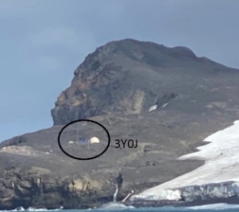

From the WVARA list …
From: chat@WVARA.groups.io <chat@WVARA.groups.io> On Behalf Of Jim Peterson
Sent: Friday, February 10, 2023 19:26
To: WVARA Chat Group <chat@WVARA.groups.io>
Subject: Re: [WVARA Chat] FYI on Bouvet
The stations at 3Y0J are running 100w and using basic wire antennas. They are located on the SE edge of the island with a steep hill blocking propagation toward the NW (ie short path to the US). As a result, the only realistic way to work them is via long path (i.e. an azimuth of 312 degrees).
Interesting quirk of fate — this means that it is easier to work Bouvet from the West Coast of the US than from the East Coast. I’ve noticed that their signals seem to be strongest here on 17m around 8am and on 15m around mid morning.

On Feb 10, 2023, at 4:58 PM, Tim Stehle <tim.stehle@gmail.com> wrote:
Jim, you may have seen this or something similar, but it was interesting to me. Google Translate into English seemed to work well.
https://ea1cs.blogspot.com/2021/08/3y0j-bouvet-island-dxpedition-2022.html
ts
_._,_._,_
Groups.io Links:
You receive all messages sent to this group.
View/Reply Online (#1689) | Reply To Group | Reply To Sender | Mute This Topic | New Topic
Your Subscription | Contact Group Owner | Unsubscribe [mike.flowers@gmail.com]
_._,_._,_